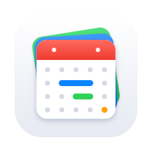

Privacy policy
Personal Calendar for macOS
Last updated 25 November 2026
Personal Calendar is a desktop app that runs on your Mac. It has no server, no accounts of its own, no analytics and no advertising. This policy explains what it does with the Google data it reads when you sign in.
What the app reads from Google
- Your basic profile: your name, email address and profile picture, to label each signed-in account.
- Your calendars and events (Google Calendar API), including calendars other people share with you, so the app can show and change them.
- Your organisation's directory (People API, read only), when you search for a coworker, so you can find people and see their schedules as far as they share them.
How the data is used
The data is used only to show your calendars and to carry out what you ask the app to do: create, edit, move or delete events, reply to invitations, and search for people. Changes are sent to Google only when you make them.
Where it is stored
- Calendar data is cached on your Mac, in the app's own folder, so the app opens quickly and works offline.
- Sign-in tokens are stored in your macOS Keychain.
- Nothing is stored anywhere else. The app has no server, and the developer never receives your data.
Sharing
Your Google data is not sold, shared or transferred to anyone. It moves only between your Mac and Google. It is not used for advertising, and it is not used to train AI or machine-learning models.
Google API Services User Data Policy
Personal Calendar's use and transfer of information received from Google APIs adheres to the Google API Services User Data Policy, including the Limited Use requirements.
Removing your data
- Removing an account in the app's Settings revokes its access with Google and deletes that account's cached data from your Mac.
- You can also revoke access at any time from your Google Account permissions.
- Deleting the app and its folder in
~/Library/Application Supportremoves everything it stored.
Contact
Questions about this policy can be sent to the developer through GitHub.